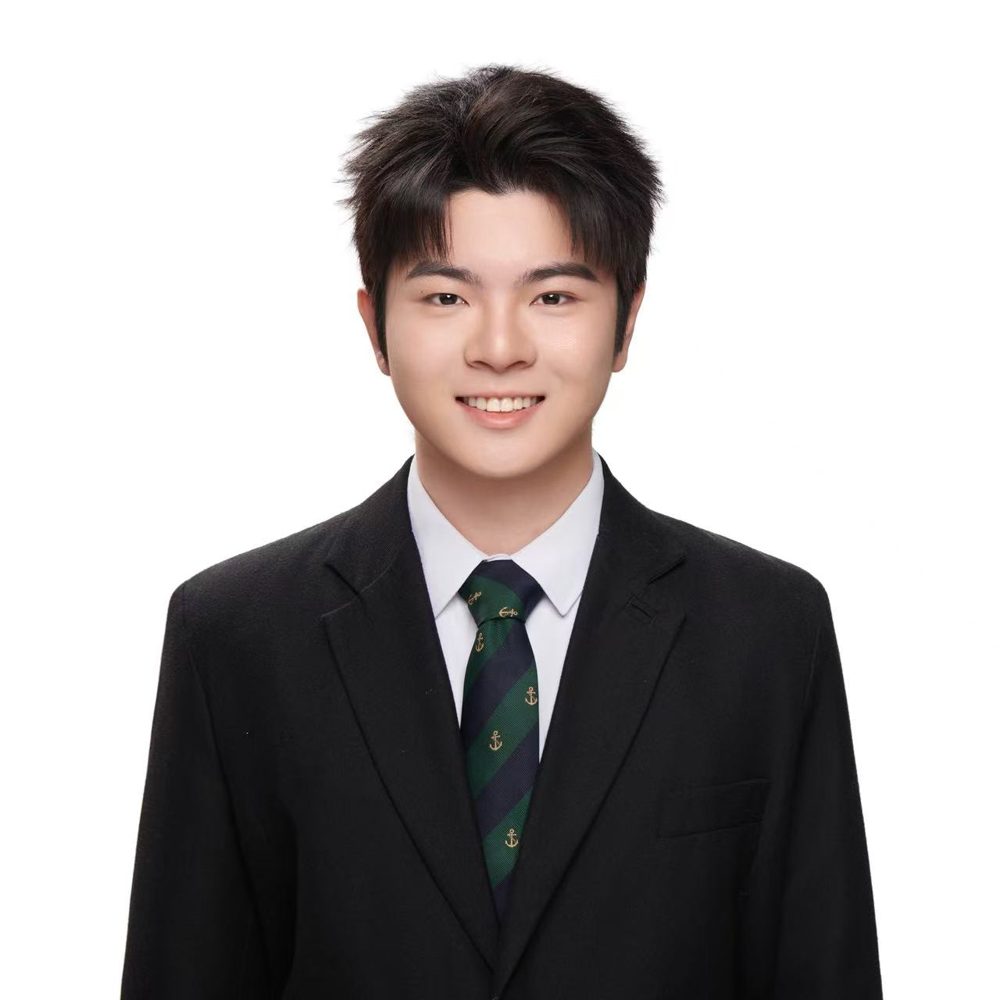

Foundation-model decoding
Mean left/right motor-imagery accuracy with REVE and LoRA in a stroke cohort under subject-wise evaluation.
Electrical Engineering · University of Pennsylvania
EEG & Brain-Computer Interface Researcher
I develop robust neural decoding methods and real-time closed-loop systems at the intersection of EEG foundation models, motor intention, and rehabilitation robotics.

Selected impact
Mean left/right motor-imagery accuracy with REVE and LoRA in a stroke cohort under subject-wise evaluation.
Real-time motor-intention decoding connected to a pneumatic rehabilitation glove and robotic platforms.
Single-session accuracy in representative high-quality recordings while benchmarking FBCSP+SVM and EEGNet.
Background
M.S.E. in Electrical Engineering
School of Engineering and Applied Science
Expected December 2026
B.Eng. (Hons) in Electronics & Electrical Engineering
2021–2025
Complete record
Research Intern · BrainCo
University of Pennsylvania · Advisors: Prof. Michelle J. Johnson and Prof. Nadia Figueroa
Research Assistant · Rehabilitation Robotics Laboratory, University of Pennsylvania
Summer Researcher · Zhejiang University & Zhejiang University Second Affiliated Hospital
B.Eng. Honours Project · University of Edinburgh
Applied engineering
Developed a camera-based system to estimate head-flexion angle and duration, with real-time posture feedback delivered through a WeChat mini-program.
Developed image-based spinal-curvature and human-joint assessment integrated into a WeChat mini-program for posture evaluation and rehabilitation recommendations.
Methods & tools
Python, MATLAB, C/C++, Verilog
PyTorch, TensorFlow/Keras, scikit-learn; EEGNet, REVE, LaBraM, LoRA, SVM
EEG/EMG preprocessing, MNE-Python, CSP/FBCSP, spectral and time-frequency analysis, artifact and signal-quality analysis
Sliding-window inference, online calibration and adaptation, ROS, Linux, Docker, Git, Dash/Plotly, hardware-control integration
Recognition
EEG foundation-model-based motor-intention decoding and real-time closed-loop control of rehabilitation devices.